| Alumna | Agostina Lucas Magenta |
|---|---|
| Curso | 1.º A |
| Materia | Cocina y Pastelería |
| Trabajo | Monografía |
| Año | 2026 |
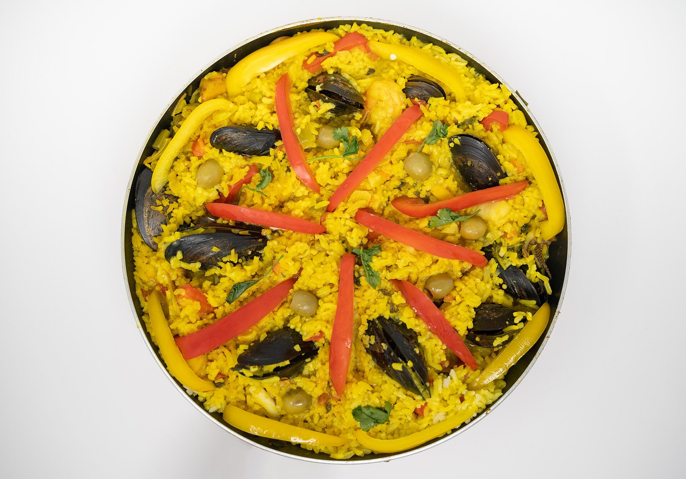
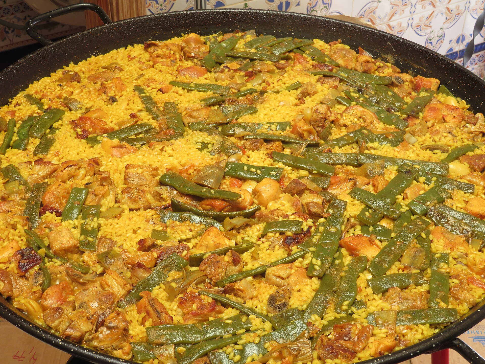
La paella es uno de los platos más representativos de la gastronomía española y uno de los más reconocidos a nivel internacional.
Su ingrediente principal es el arroz, que se cocina junto con diferentes carnes, verduras, pescados o mariscos, dependiendo de la variedad que se prepare.
Esta preparación tiene su origen en la Comunidad Valenciana, en el este de España, donde el cultivo del arroz tuvo un papel fundamental en el desarrollo de su gastronomía.
La paella no es solamente una comida tradicional, sino también una expresión de la cultura y las costumbres españolas.
Su elaboración permite conocer diferentes técnicas culinarias, la importancia de los ingredientes y el comportamiento del arroz durante la cocción.
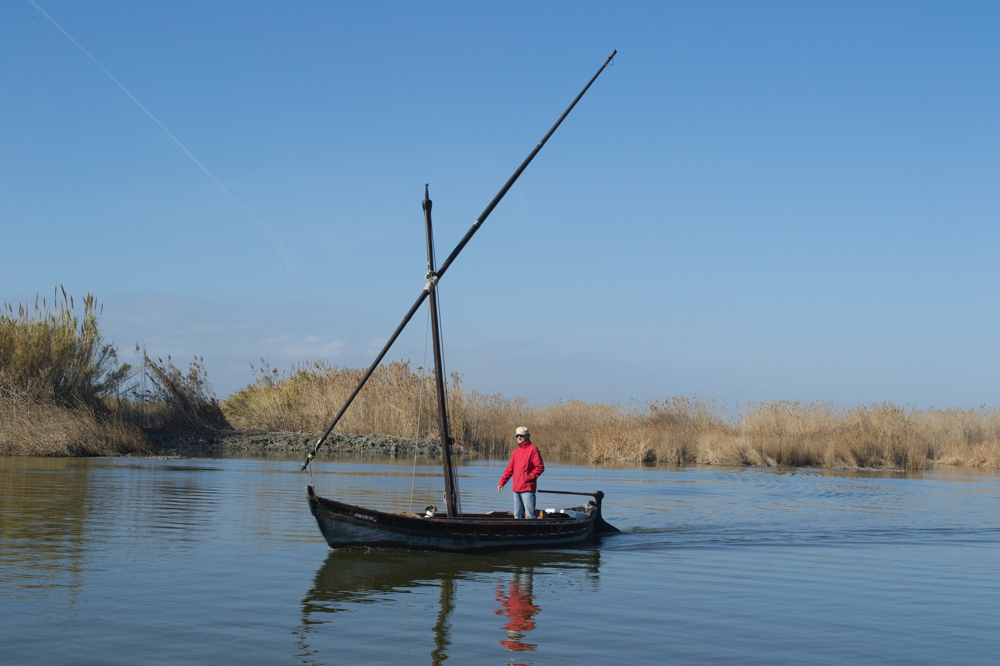
La paella nació en las zonas rurales de Valencia, especialmente en los alrededores de la Albufera, una región caracterizada por sus lagunas y extensos campos de arroz.
Originalmente era una comida preparada por campesinos y trabajadores rurales, quienes utilizaban los ingredientes que tenían disponibles. Se trataba de una preparación sencilla, nutritiva y abundante, que podía compartirse entre varias personas.
Con el paso del tiempo, el arroz se convirtió en el ingrediente principal y comenzó a combinarse con carnes como el pollo y el conejo, además de verduras y especias.
Durante el siglo XIX, la paella comenzó a popularizarse en diferentes sectores de la sociedad española, convirtiéndose en una preparación habitual en reuniones familiares y celebraciones.
Actualmente, es considerada un símbolo de la identidad gastronómica de Valencia y de España.
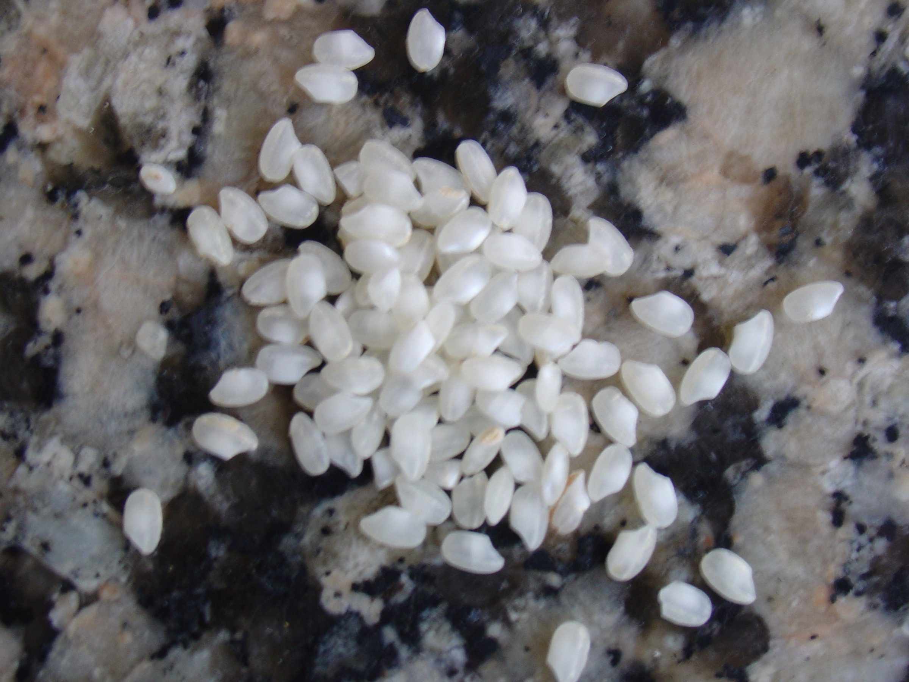
La paella tradicional valenciana se caracteriza por utilizar ingredientes propios de la región: arroz, pollo, conejo, judías verdes, garrofó, tomate, aceite de oliva, azafrán, pimentón y agua.
El arroz es el ingrediente fundamental, ya que absorbe los sabores del resto de los alimentos durante la cocción.
El pollo y el conejo aportan proteínas y sabor, mientras que las verduras incorporan diferentes texturas y aromas.
El azafrán cumple una función importante porque aporta el color amarillo característico y un aroma particular.
El aceite de oliva se utiliza para dorar los ingredientes y desarrollar sus sabores.
El tomate, rallado, es la base del sofrito, y el pimentón dulce suma color. El agua, al hervir con las carnes y las verduras, se transforma en el caldo que el arroz absorberá.
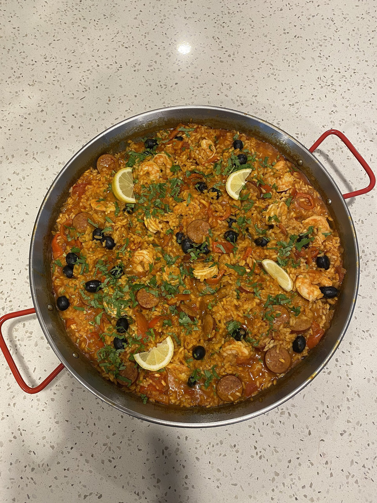
La paella recibe su nombre del recipiente donde se prepara: una sartén metálica, amplia y poco profunda, que generalmente tiene dos asas laterales.
Su forma permite distribuir el arroz en una capa fina y favorecer una cocción uniforme, además de facilitar la evaporación del líquido.
Primero se doran las carnes con aceite de oliva para desarrollar sus sabores. Luego se incorporan las verduras y el tomate para preparar el sofrito.
Posteriormente se agrega agua y se deja hervir para obtener un líquido con sabor.
Finalmente se incorpora el arroz, que absorbe el líquido durante la cocción. Es importante no revolverlo constantemente, ya que se busca obtener granos cocidos y relativamente separados.
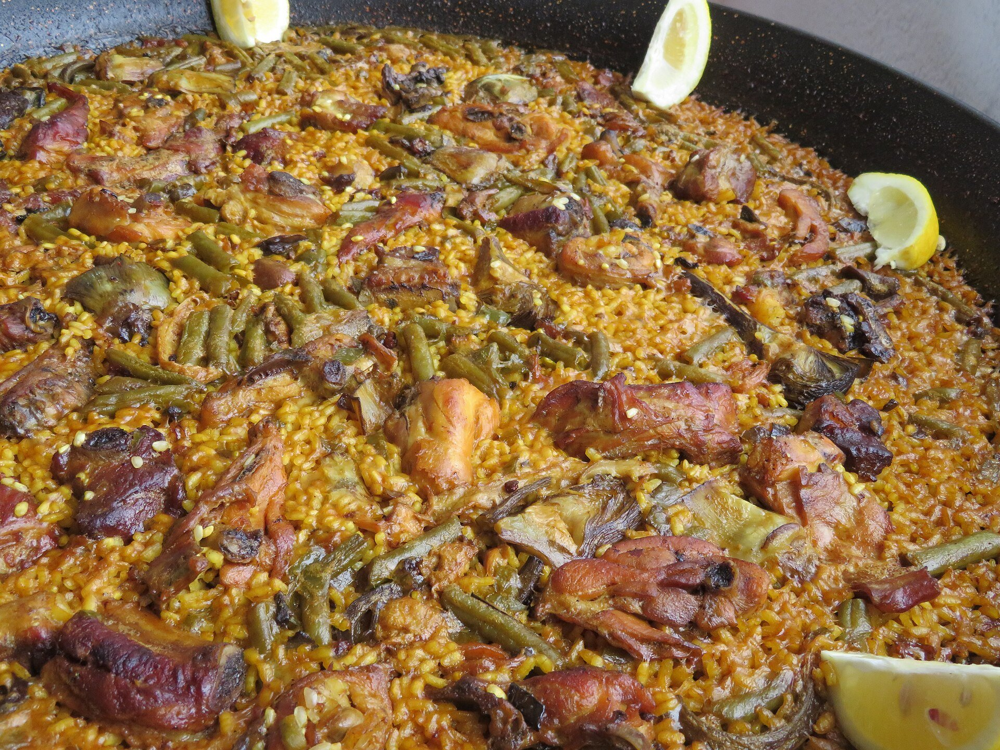
| Arroz bomba | 400 g |
| Pollo troceado, con hueso | 500 g |
| Conejo troceado | 300 g |
| Judías verdes planas (chauchas) | 200 g |
| Garrofó (o porotos de manteca) | 100 g |
| Tomate maduro rallado | 1 grande |
| Aceite de oliva | 80 ml |
| Azafrán en hebras | 1 pizca |
| Pimentón dulce | 1 cdta. |
| Agua | 1,6 l aprox. |
| Sal | c/n |
1. Trocear el pollo y el conejo en piezas parejas y salarlas.
2. Lavar las judías, quitar las puntas y cortarlas en tramos.
3. Rallar el tomate y descartar la piel.
4. Pesar el arroz. No se lava: su almidón ayuda a ligar el caldo.
5. Medir el agua y tener a mano azafrán, pimentón y sal.
Paella de 40 cm · Fuego amplio y parejo (paellero, hornalla grande o leña) · Espumadera · Rallador · Tabla y cuchillo · Jarra medidora · Paño limpio.
La receta no lleva gluten, lácteos ni huevo. Verificar el rotulado de las especias envasadas.
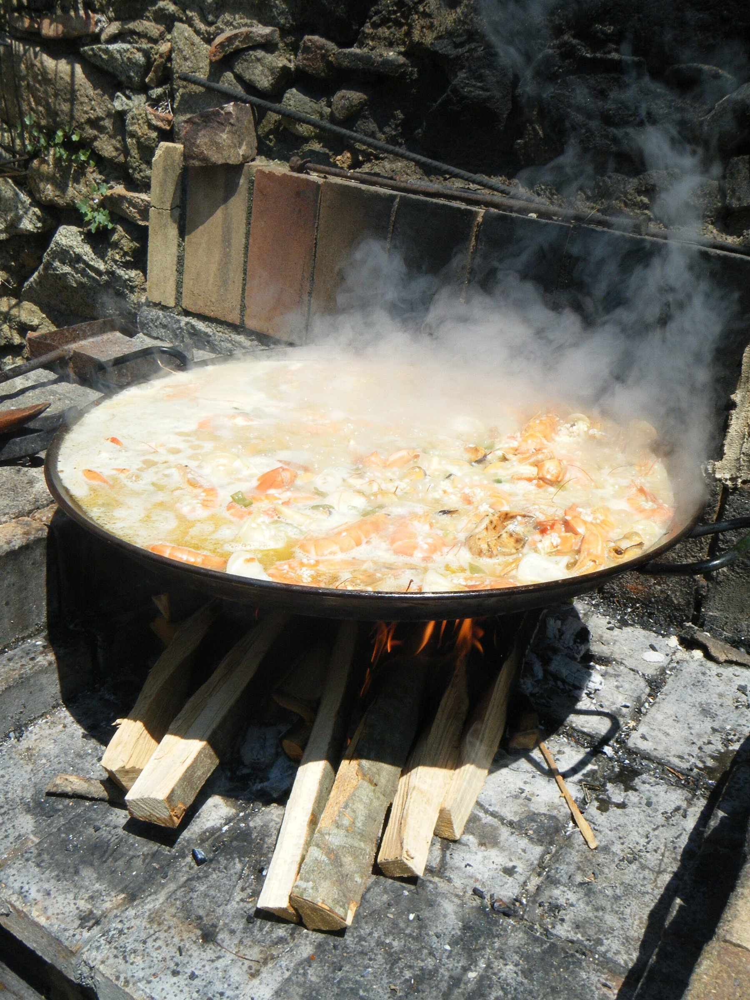
Ocho pasos, un solo recipiente y una regla de oro: una vez que entra el arroz, no se revuelve.
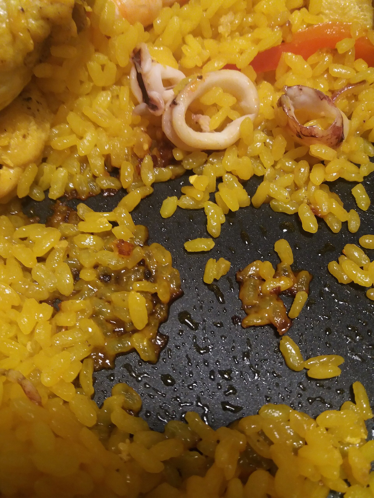
Una de las características más apreciadas de la paella es el socarrat: una fina capa de arroz tostado que se forma en el fondo del recipiente durante los últimos momentos de cocción.
Esta parte aporta una textura crocante y un aroma tostado muy particular.
Para conseguirlo es necesario controlar correctamente la temperatura, evitando que el arroz se queme.
El socarrat es considerado por muchos especialistas una de las características que distinguen a una buena paella.
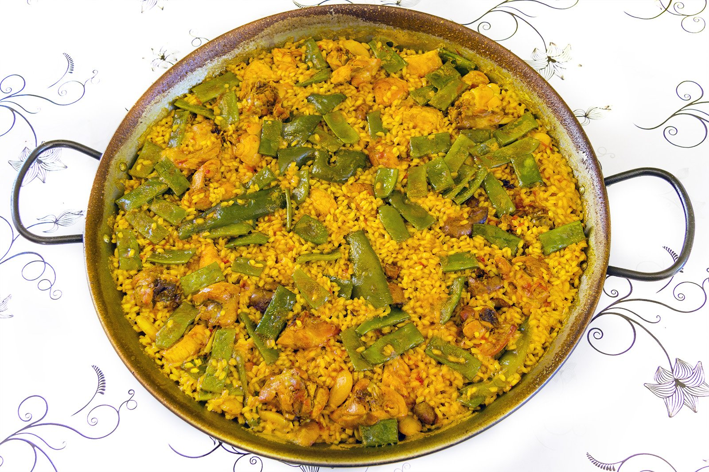
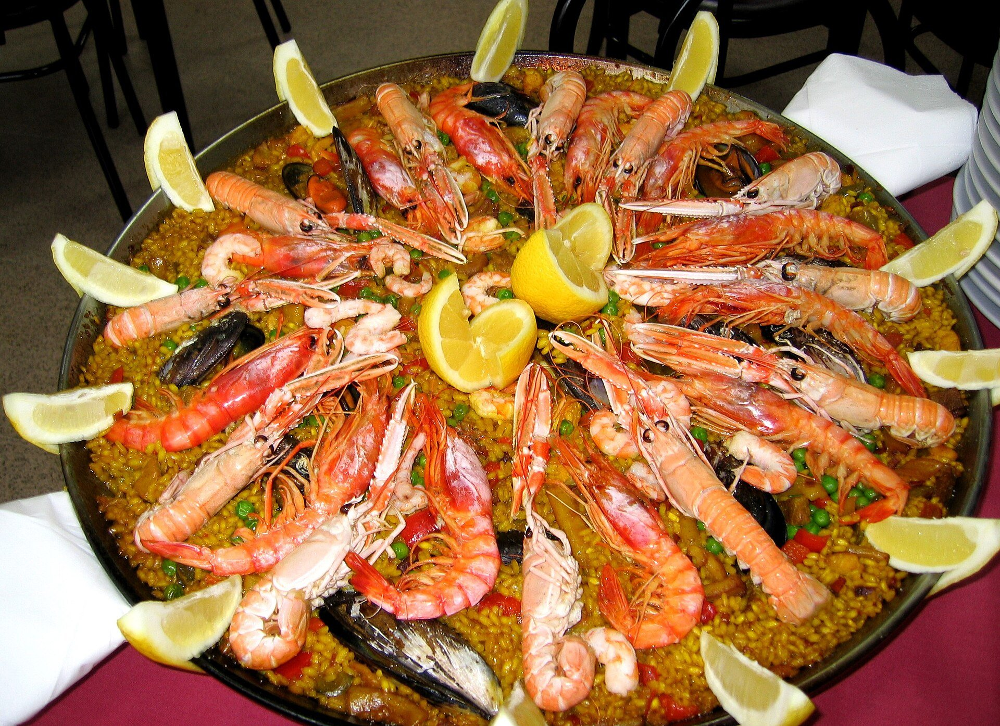
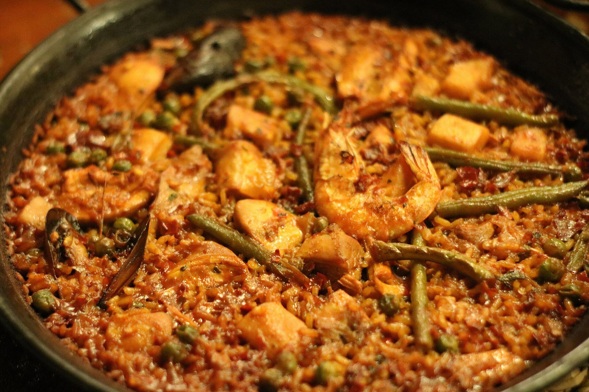
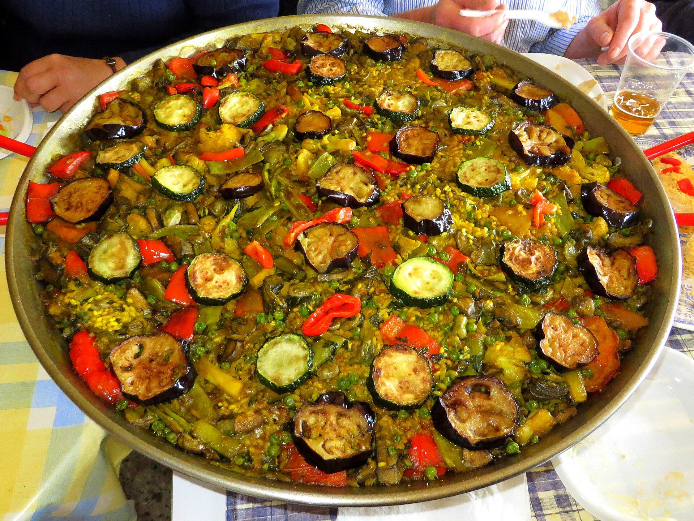
Con el paso del tiempo surgieron diferentes versiones de esta preparación, adaptadas a los ingredientes y las costumbres de cada región.
Es la receta tradicional y se prepara principalmente con pollo, conejo, arroz y verduras.
Incorpora productos del mar como langostinos, mejillones, calamares y gambas, generalmente acompañados de un caldo de pescado.
Combina carnes, mariscos y verduras en una misma preparación.
Utiliza diferentes vegetales como alcauciles, pimientos y judías verdes.
Estas variedades demuestran cómo una preparación tradicional puede evolucionar y adaptarse a diferentes gustos sin perder su reconocimiento gastronómico.
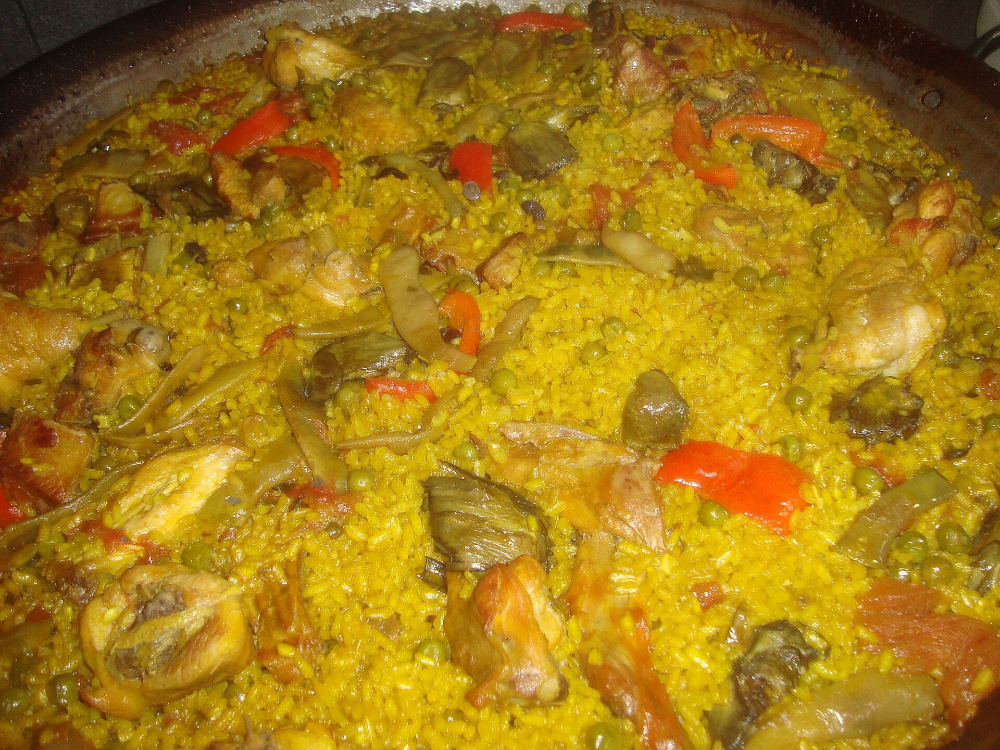
Las características organolépticas son las propiedades de los alimentos que podemos percibir a través de los sentidos.
Generalmente amarillo dorado, debido al azafrán.
Intenso, aportado por las carnes, las verduras y las especias.
Equilibrado; depende de la calidad de los ingredientes y del caldo utilizado.
El arroz debe quedar cocido y suelto, las carnes tiernas y las verduras en su punto adecuado.
La presentación también es importante, ya que los ingredientes deben estar distribuidos de manera atractiva sobre el arroz.
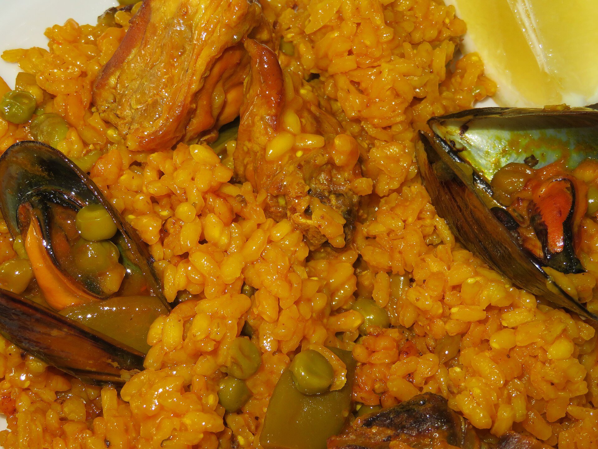
| Nivelar la paella antes de empezar. |
| Usar un fuego que abarque toda la base. |
| Dorar bien las carnes: allí nace el sabor. |
| Mantener el arroz en capa fina. |
| Respetar el reposo antes de servir. |
| Revolver el arroz durante la cocción. |
| Recargar la paella de ingredientes. |
| Quemar el pimentón: amarga todo. |
| Usar un arroz que no absorba bien. |
| Pasarse de fuego al buscar el socarrat. |
| Se presenta en el mismo recipiente, en el centro de la mesa, y se sirve recién hecha. |
| Higiene: lavarse las manos y usar tablas distintas para carnes crudas y verduras. |
| Las sobras se enfrían rápido, se refrigeran tapadas y se consumen dentro de las 24 horas, bien recalentadas. |
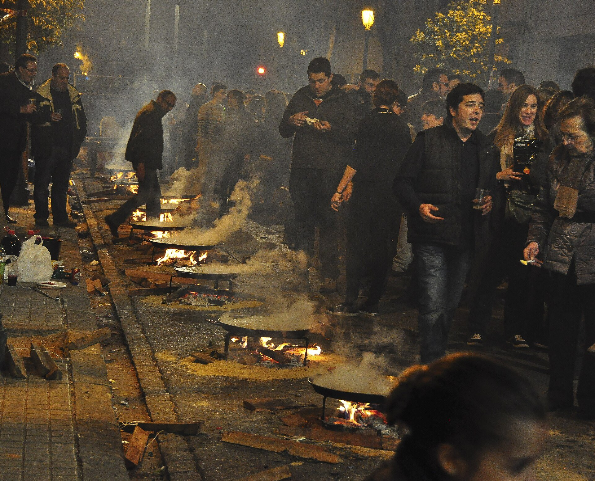
La paella representa mucho más que una preparación culinaria. Es una tradición que forma parte de la identidad cultural valenciana.
Está relacionada con las reuniones familiares, las celebraciones y los encuentros sociales.
Su elaboración suele compartirse entre varias personas y es habitual prepararla al aire libre para disfrutarla en grupo.
Con el crecimiento del turismo y la difusión de la cocina española, la paella llegó a diferentes países y comenzó a adaptarse a los ingredientes disponibles en cada lugar.
Esta expansión demuestra la importancia de la gastronomía como medio de intercambio cultural.
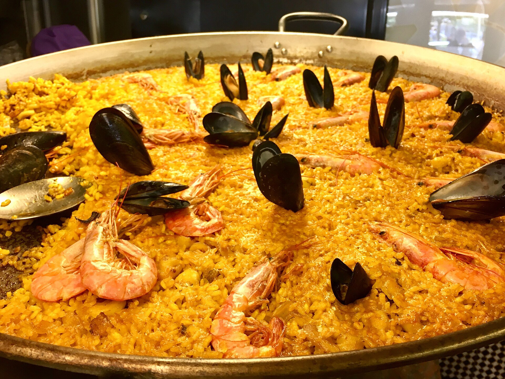
La paella es una de las preparaciones más importantes de la gastronomía española.
Su historia, sus ingredientes y sus técnicas de elaboración permiten comprender cómo un plato de origen rural puede convertirse en un símbolo cultural reconocido mundialmente.
Desde el punto de vista gastronómico, su preparación requiere conocimientos sobre el arroz, las materias primas, las técnicas de cocción y el control de temperatura.
Además, sus diferentes variedades demuestran la capacidad de la cocina para evolucionar y adaptarse a distintas culturas y preferencias.
En conclusión, estudiar la paella permite comprender que la gastronomía no consiste solamente en preparar alimentos, sino también en conservar tradiciones, transmitir conocimientos y compartir experiencias a través de la comida.
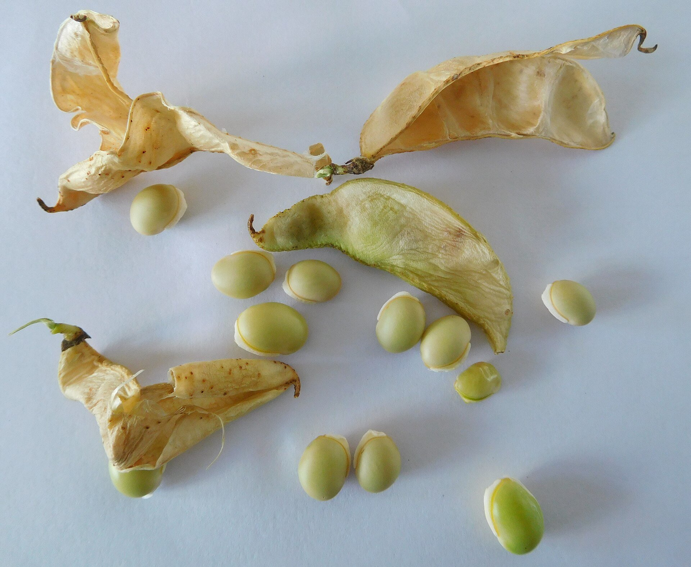
| 30 cm | 2 a 3 porciones |
| 40 cm | 4 a 6 porciones |
| 50 cm | 7 a 9 porciones |
| 60 cm | 10 a 14 porciones |
| Arroz por porción | 100 g |
| 1 taza de arroz | ≈ 200 g |
| 1 cucharada (cda.) | 15 ml |
| 1 cucharadita (cdta.) | 5 ml |
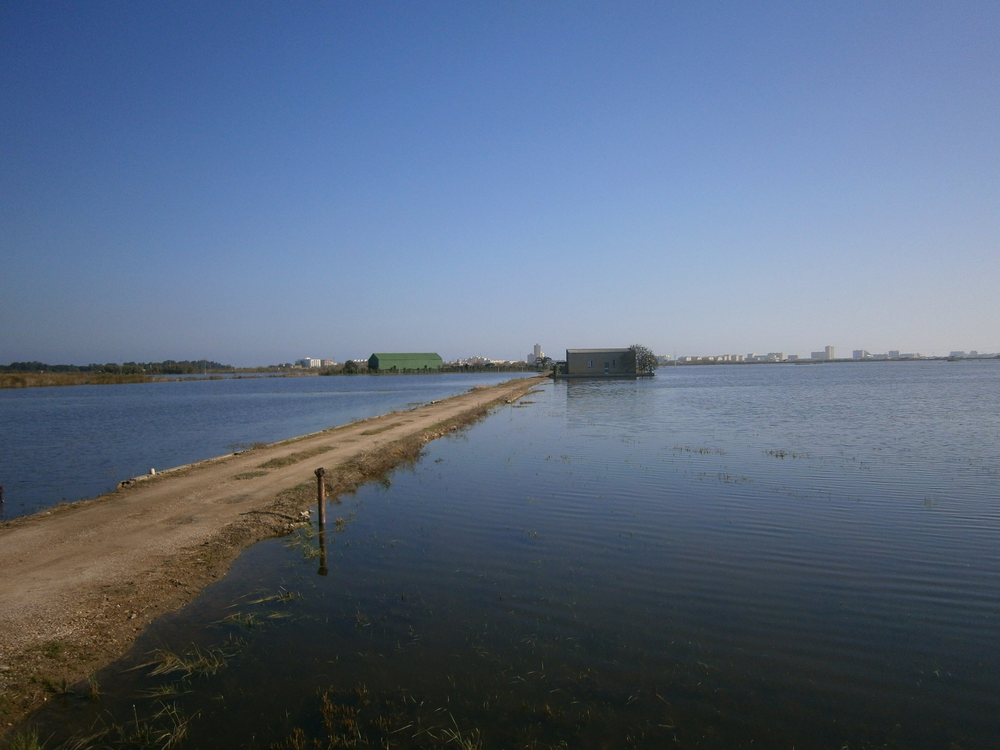
Ministerio de Cultura de España. Información sobre la paella valenciana y su valor cultural.
Turismo de Valencia. Historia y gastronomía tradicional valenciana.
Generalitat Valenciana (2021). Declaración de la paella valenciana como Bien de Interés Cultural inmaterial.
Real Academia Española. Diccionario de la lengua española, voz «paella».